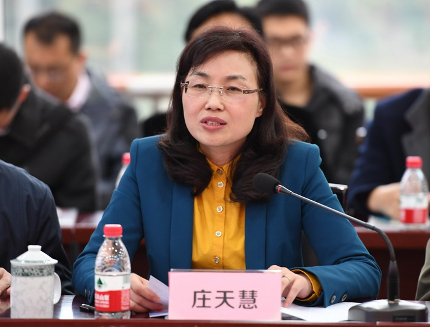
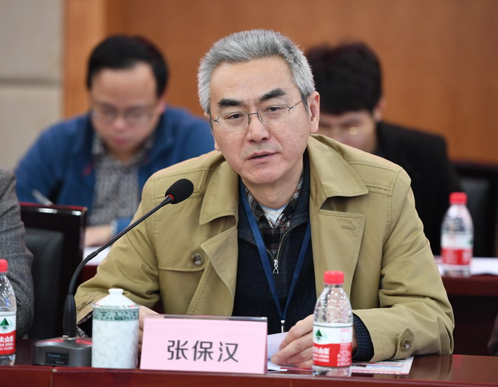
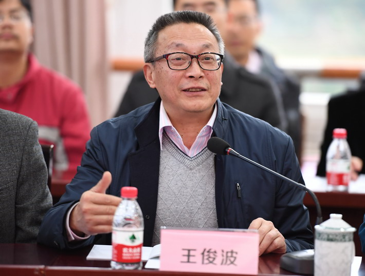
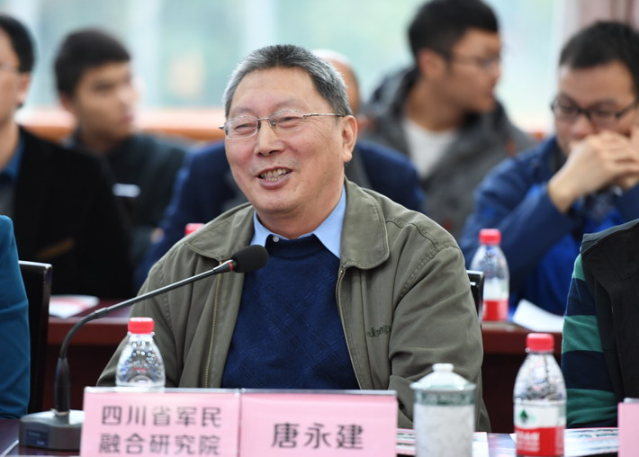
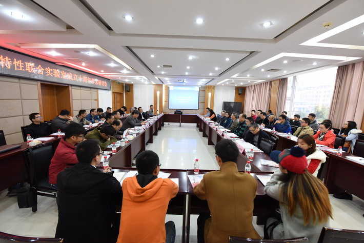

首页
实验室概况
科学研究
科研团队
学术交流
联系我们
强激光与物质
相互作用实验室
新能源材料
研究中心
微结构与特种功能
材料实验室
功能薄膜实验室
光电检测技术
与应用实验室
实验室概况
Laboratory survey
·
实验室动态
·
通知公告
·
国内外研究前沿
当前位置：
主页
>
学术交流
>
实验室动态
>
实验室举行成立十周年学术研讨会
发布时间:2017-04-18 文章作者:秩名 已阅读: 次
日前，军民融合论坛2016年系列学术活动之极端条件物质特性实验室成立十周年学术研讨会在我校召开。本次会议由四川省军民融合研究院、理学院、国防学院、极端条件物质特性联合实验室联合主办，包括来自中物院、中国科技大学等单位代表参加会议，我校相关专业师生聆听了研讨会报告。

学校党委书记庄天慧同志出席研讨会开幕式并作讲话。她代表学校对参会专家学者表示热烈欢迎，并介绍了学校以及极端条件物质特性联合实验室近年来建设发展取得的成绩，希望实验室能进一步加强同中物院的合作，在军民融合、协同创新、联合共建中取得更大的成绩。
中物院八所所长张保汉研究员、副所长郑万国研究员、四川省军民融合研究院院长唐永建研究员，西南科技大学原党委书记王俊波教授、西南科技大学原副校长楚士晋研究员，八所各部负责人，学校科技处、研究生部、理学院、国防学院、材料学院、信息学院、计算机学院的相关负责人参加会议。

会上，张保汉研究员回顾了极端条件实验室成立之初及十年来双方合作所做的努力。

王俊波教授对实验室建设的初衷以及十年如一日所取得的成绩作了进一步肯定。

唐永建研究员表示一步一个脚印、踏实做事造就了实验室在硬件条件、人才队伍、研究方向上的不断壮大。

随后，参会人员进行了热烈讨论，对实验室十年发展的成绩纷纷表示肯定，并期望实验室抓住发展机遇，在十三五期间获得更大的提升。
开幕式结束后，郑万国研究员与中物院八所曹磊峰研究员分别作《激光技术发展动态与对当前工作的思考》、《MaRIE计划简介与实验室建设几点看法》的主题报告，来自中国科技大学、中物院八所以及校内专家学者围绕“强激光与物质相互作用”、“极端条件下的材料物理与化学”进行了学术报告，并对大家关注的热点问题进行了讨论。

 当前位置：
当前位置：